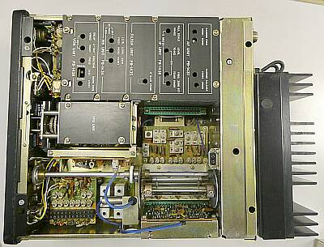
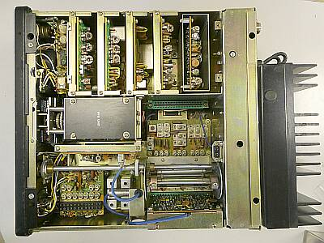
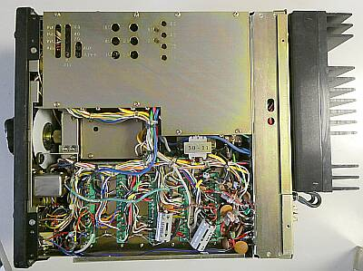
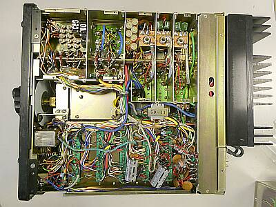
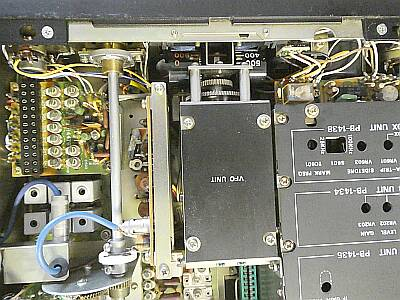
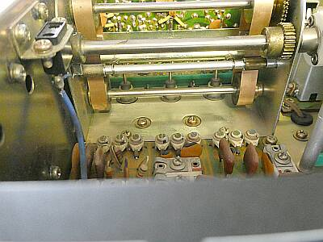
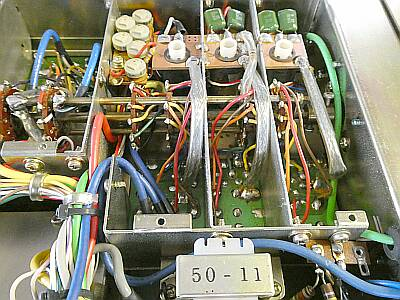
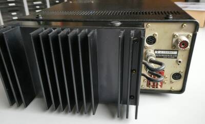

 |
上手にコンパクトにまとめてあります
整然と美しいです
１００Wモデルは、背面にパワーアンプユニットを背負う形です
本体がコンパクトだけに、このパワーアンプ部が大きく見えます
１０Wモデルでしたら、この部分は、丸々ありません |
 |
ユニット単位で各段を構成
これは、ＦT-１０１に通じる部分です
中央右のソケットは、AMオプションボードのために用意されたものです |
 |
シャーシ底面 |
 |
シャーシ底面
シールド板を外して写しました |
 |
メインダイヤル部分
やはり、旧スターの機構が取り入れられています
プリＭｉｘクリスタルを省くのは３．５ＭＨｚ帯のみで、FT-２００の１４ＭＨｚ帯に見られるような逆ダイヤルは生じません
余談ですが、ＦＴ-５０１以外にも、同様のプリＭｉｘ方式を採用したFT-２００という、ＦT-１０１の弟分も発売されていました
ＦＴ-２００の後継で、ＦＴ-２０１というファイナル、ドライバ以外が半導体化されたモデルです
ＦＬ-１０１／ＦＲ-１０１のデザインを踏襲したモデルでした
ＦＴ-３０１の後継というのは見当たりません、いわゆる一発屋です |
 |
ＦT-１０１以降、お馴染みとなったスラグチューン（μ同調機構）を採用
ＦT-１０１とは異なり、シャーシを起点にシャーシ内に「L部」を収容
左に見える２Pフィーダーコンセントは、内蔵スピーカー接続のためのものです |
 |
スラグチューン機構の裏側（シャーシ下）です
スラグチューン左の半固定ＶＲ群は、各バンドごとに送信パワーを調整するためのものです |
 |
意外、というか・・・
本機には、外部スピーカー端子がありません
スピーカー内蔵外部電源ＦＰｰ３０１を必ず取り付けて使うことが前提のような設計です
外部電源接続について
１２P角型ジョンソンコネクタでの接続ですが、多分本体に標準で付属のＤＣコードであれば、コネクタ内でスピーカー配線がジャンプされていて、本体内蔵スピーカーが鳴るようになっていると思われます
ＦＰ-３０１を接続すると、電源内蔵のスピーカーが鳴り、本体内蔵のスピーカーは無視されます |
|
通電後、送信したらいきなり、はじけたような大きな爆発音と白煙が上がりました，あらビックリ
送信時＋１２Vラインに入っているタンタル・コンデンサが、はじけ飛んでいました
あと気になった部品の劣化は、トリマコンデンサ
調整しようと回すと、剥がれてしまう（下がくっつき、上が空転）・・・キャリア（ＢＦＯ）のｆズレ調整が出来ず、1個交換しました
これらのもの以外、特に部品の劣化による問題症状は出ていません
長年の保管であったにかかわらず、送受ともスペック通りの動作をしています |